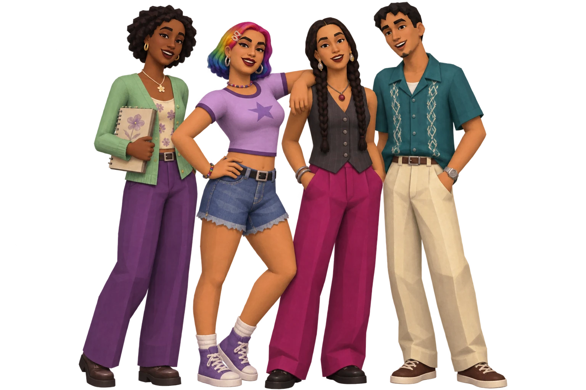
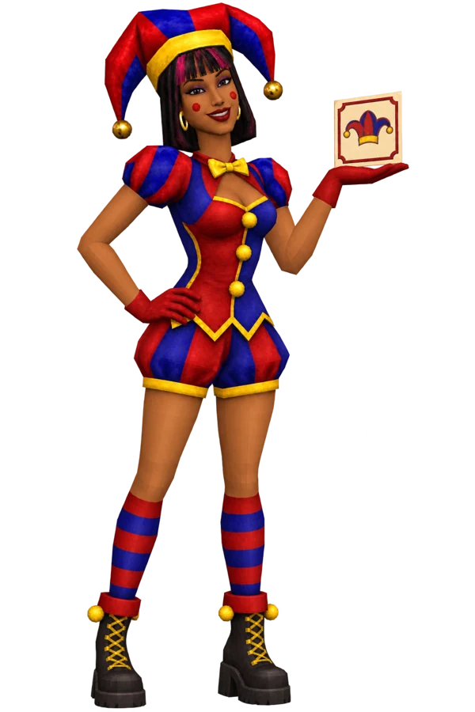
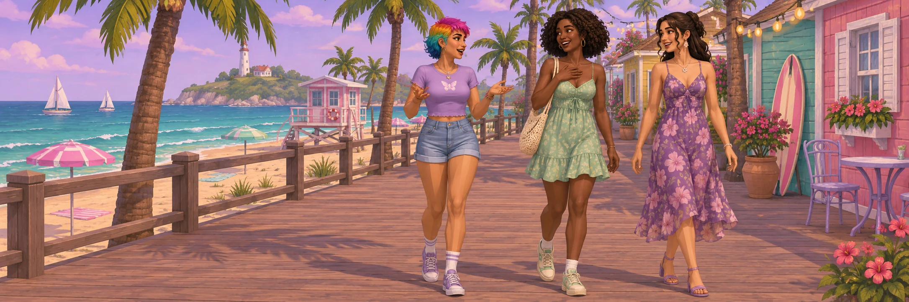

Painted color
Rainbow
off-duty.

Rainbow hair, a cropped jacket and purple headphones give this everyday outfit a playful early-3D look.
Character & outfit conceptA face, an outfit, a whole personality
See the original characters in motion, then explore outfit ideas and studies inspired by older Sims games.
Meet the real in-game household ↓
Made in The Sims 4
Open a turntable to see each original character from every angle.

This Sim has long dark braids and wears a grey vest with magenta trousers.

This Sim has blonde hair and wears a purple graphic tank top with patterned trousers and boots.

This Sim has wavy brown hair and wears a blue moon-and-stars shirt with striped shorts.
Open a turntable to see the original animation or its still image.
The style collection · Concept art
Angular shapes and painted color give these characters a different kind of charm. These are visual studies, not Sims 1 or Sims 2 downloads.
Painted color
Rainbow hair, a cropped jacket and purple headphones give this everyday outfit a playful early-3D look.
Character & outfit conceptA little theatrical

Red and blue panels, yellow trim and striped socks carry the costume’s colors from the hat down to the boots.
Character & outfit concept03 / A wardrobe study · Concept art
The rainbow bob stays the same while the clothes change: relaxed denim, a plum evening dress and a festival look built around an iridescent jacket.
04 / A rendering study · Concept art
The rainbow hair, jacket and denim shorts stay familiar while the rendering changes. Compare the angular shapes on the left with the softer forms and more detailed hair on the right.
Scroll across to compare all three styles.
Faceted limbs, broad hair planes and simple painted textures.
Rounder features and richer shading, with the same outfit.
Smoother contours and more defined hair and fabric details.
The summer lookbook · Concept art
Character and clothing ideas, away from the everyday. These are looks I’m exploring, not finished custom-content downloads.

Explore the whole scene ↗A change of scene
Denim and sneakers for the boardwalk, soft florals for a slow afternoon, and a brighter palette beside the pool.
The outfits and locations in these pictures are visual ideas, not screenshots of playable content.
See the real in-game characters ↑ Take a closer look ↗
Take a closer look ↗